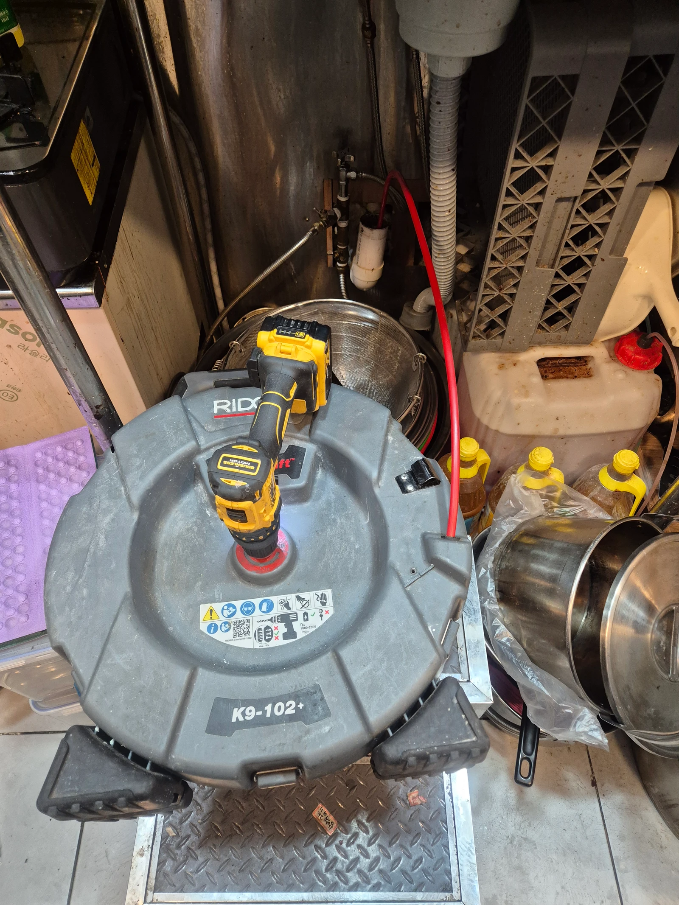
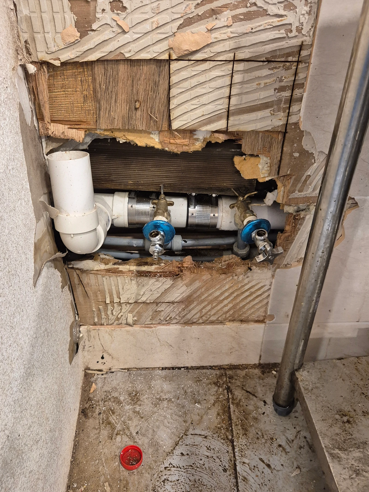

강남구 삼성동 하수구업체 현장 진단
강남구 삼성동 하수구업체를 알아볼 때는 막힘 제거뿐 아니라 배관 손상이 확인됐을 때의 처리 범위도 살펴보는 것이 좋습니다. 이번 식당 주방에서는 기름때 제거와 파손 구간 신설을 함께 진행했습니다. 이번 하수구막힘은 배관 상태에 따라 작업 범위를 나누어 진행한 사례입니다. 신라건축설비은 현장 상태를 확인하고 기름때를 처리하는 과정과 파손 부위를 복구하는 과정을 이어서 진행했습니다. 단순히 물이 내려가기 시작하는 것과 손상된 배관이 복구되는 것은 서로 다른 확인 항목입니다.
이번 하수구막힘의 원인으로 확인된 것은 배관의 기름때 문제였고, 일부 배관에는 파손도 있었습니다. 기름때가 흐름을 방해하는 문제와 배관 자체가 손상된 문제를 하나로 묶어서 판단하지 않았습니다. 막힌 부분을 정리해도 파손된 곳이 그대로 남아 있다면 필요한 조치가 끝난 상태라고 할 수 없기 때문입니다. 따라서 내부 작업과 배관 교체를 각각의 목적에 맞게 진행했습니다.
하수구가 막혔을 때 물을 계속 흘려보내며 상태를 시험하기보다는 사용을 줄이고 문제가 생긴 위치를 먼저 확인하는 것이 좋습니다. 삼성동 하수구막힘 현장에서도 내시경 점검과 배관 상태 확인이 작업 판단의 기초가 됐습니다. 눈에 보이는 배수구 입구만 보고 안쪽 상태까지 추측하지 않고, 실제로 접근할 수 있는 위치와 손상 구간을 구분해 작업을 준비했습니다.
상담 단계에서 모든 현장에 같은 작업이나 금액을 약속하기는 어렵습니다. 막힘을 처리하는 범위와 파손 구간을 교체하는 범위가 다르기 때문입니다. 점검 결과에 따라 어떤 부분을 철거하고 어디까지 다시 연결할지 설명받는 것이 도움이 됩니다.
1단계: 샤프트로 기름때 막힘 처리
첫 작업에서는 샤프트를 투입해 기름때로 막힌 배관을 정리했습니다. 하수구막힘을 처리할 때 샤프트는 내부에 붙은 오염을 다루는 도구이며, 파손된 배관을 새것으로 바꾸는 역할을 하지는 않습니다. 이번에는 주방의 배수 위치에 장비를 놓고 내부 작업을 진행했습니다. 장비의 이름보다 어떤 문제를 처리하려고 사용하는지 구분하는 것이 현장 과정을 이해하는 데 중요합니다.
기름때 제거 작업의 목적은 물이 지나갈 통로를 확보하는 것이었습니다. 강남구 삼성동 하수구막힘은 이 과정만으로 전체 작업을 마칠 수 있는 사례가 아니었습니다. 배관 일부가 파손돼 있어 손상 구간에 대한 별도 조치가 필요했습니다. 막힘 제거와 배관 보수는 서로 대체할 수 없는 작업이므로, 내부 오염을 처리하는 과정과 철거·신설 과정을 이어서 진행했습니다.

2단계: 파손 배관 일부 철거·신설
다음 단계에서는 파손된 배관 일부를 철거했습니다. 이번 하수구막힘 현장에서 교체 대상은 손상이 확인된 구간이며, 전체 배관을 모두 교체한 작업으로 설명하지 않습니다. 사진에는 벽 쪽 배관이 노출된 모습과 연결부를 작업한 모습이 남아 있습니다. 기존 연결 위치를 살피면서 필요한 부분을 정리하고 새 배관을 설치할 수 있도록 작업 구간을 확보했습니다.
철거한 부분에는 새 배관을 설치해 다시 연결했습니다. 하수구막힘을 해소하는 내부 작업과 달리 이 단계는 손상된 배관 구간을 복구하는 것이 목적입니다. 기존 배관과 신설 구간이 이어지도록 연결 작업을 진행했고, 이후 실제로 물이 흐르는 상태를 확인하는 단계로 넘어갔습니다. 파손 부위를 남겨둔 채 막힘만 해결했다고 마무리하지 않고, 확인된 두 문제에 각각 대응했습니다. 새로 연결한 모습만으로 작업 완료를 판단하지 않고 물이 흐르는 상태까지 확인하는 것이 이번 마무리의 기준이었습니다.

작업 결과와 재발 방지
작업 후에는 통수 상태를 확인했으며 최종적으로 안정적인 배수가 확인됐습니다. 삼성동 하수구막힘의 마무리 결과는 기름때 처리와 파손 구간 철거·신설 후 물이 안정적으로 흐르는 상태입니다. 다만 이번에 작업한 범위의 결과를 건물 전체 배관의 상태나 앞으로의 무조건적인 무재발 보장으로 확대하지 않습니다. 실제 작업 구간과 최종 확인 결과를 연결해 현장 기록으로 남겼습니다.
하수구 뚫는 업체에 문의할 때에는 물이 고이는 위치, 불편이 시작된 상황, 이미 시도한 방법을 함께 알려주세요. 하수구막힘 작업 중 배관 파손이 확인된다면 제거 작업과 교체 작업의 범위를 구분해 설명받는 것이 좋습니다. 신라건축설비은 이번 강남구 삼성동 현장에서 기름때 문제와 손상 구간을 함께 다뤘고, 필요한 부분을 신설한 뒤 안정적인 통수 상태로 마무리했습니다.
하수구막힘 재발을 줄이려면 식당 주방에서 남은 기름과 음식물 찌꺼기를 한꺼번에 배수구로 흘려보내지 않는 관리가 필요합니다. 기름은 따로 모아 처리하고 거름망에 걸린 찌꺼기도 수시로 정리해주세요. 배수가 다시 느려지면 계속 물을 붓거나 도구를 깊이 밀어 넣기보다 상태를 점검하는 편이 좋습니다. 배관 파손을 보수한 현장이므로 연결 구간 주변의 변화도 함께 살펴보시기 바랍니다.
최종 조치: 기름때 처리와 파손 배관 일부 철거·신설 후 안정적인 통수를 확인했습니다.
현장 방문 전 확인하는 비용과 작업 범위
신라건축설비는 현장 증상과 배관 구조를 확인한 뒤 필요한 작업과 예상 비용을 안내합니다. 단순 관통으로 해결되는지, 배관내시경·석션·고압세척 또는 추가 장비가 필요한지는 현장 상태에 따라 달라집니다. 출장비와 야간 작업비, 추가 장비 비용이 발생할 수 있는 경우 작업 전에 먼저 설명하고 동의를 받은 범위에서 진행합니다.
업체를 선택할 때 확인할 사항
무조건적인 ‘0원’ 표현보다 실제 작업 범위, 추가 비용 조건, 사용 장비와 사후 대응 기준을 확인하는 것이 중요합니다. 해결되지 않았을 때의 비용 기준과 작업 후 동일 증상 발생 시 점검 범위를 사전에 문의해두면 불필요한 분쟁을 줄일 수 있습니다.
강남구 하수구막힘 자주 묻는 질문
하수구막힘은 왜 반복되나요?
강남구 삼성동 현장처럼 식당 주방 배수관에 기름때로 인한 막힘이 발생했습니다. 증상은 원인이 현장마다 다를 수 있습니다. 배관 내부 기름 슬러지·생활 오염물·스케일이 충분히 제거되지 않았거나 오수관·공용배관 구간에 문제가 있으면 반복될 수 있습니다. 재발 시 막힌 위치와 배관 상태를 함께 확인합니다.
하수구가 역류하거나 물이 안 내려가면 하수구뚫는업체를 불러야 하나요?
바닥 배수구가 역류하거나 여러 배수구에서 동시에 물이 빠지지 않으면 단순 배수구 막힘보다 깊은 배관이나 공용배관 문제일 수 있습니다. 전문 장비로 원인 구간을 확인하는 것이 좋습니다.
여러 배수구가 동시에 막히면 공용배관이나 오수관 문제인가요?
동시에 여러 곳에서 배수 불량과 역류가 발생하면 메인배관·오수관·공용배관을 의심할 수 있지만 건물 구조마다 다릅니다. 배관내시경과 현장 진단으로 구간을 구분합니다.
하수구뚫는업체는 어떤 장비로 작업하나요?
현장에 따라 샤프트, 석션, 배관내시경, 고압세척 장비 등을 사용합니다. 단순 관통이 필요한지 배관 내부 세척까지 필요한지는 오염 상태와 막힘 원인에 따라 판단합니다.
하수구 고압세척은 언제 필요한가요?
기름 슬러지나 배관 내부 오염이 넓게 쌓여 반복 막힘이 생기는 경우 고압세척이 효과적일 수 있습니다. 모든 하수구막힘에 고압세척을 적용하는 것은 아니며 먼저 배관 상태를 확인합니다.
하수구막힘 비용은 어떻게 정해지나요?
막힌 위치, 배관 길이와 구경, 공용배관 여부, 내시경·샤프트·고압세척 등 장비 투입 범위에 따라 달라집니다. 추가 작업이 필요한 경우 진행 전에 범위와 비용을 안내합니다.
하수구막힘 서울·경기 출동지역
신라건축설비는 강남구 삼성동 현장을 포함해 서울 25개 구와 경기도 31개 시·군의 배관 문제를 상담합니다. 현장 거리와 기사 배정 상황에 따라 출동 가능 여부를 먼저 안내드립니다.
서울 전 지역
강남구 · 강동구 · 강북구 · 강서구 · 관악구 · 광진구 · 구로구 · 금천구 · 노원구 · 도봉구 · 동대문구 · 동작구 · 마포구 · 서대문구 · 서초구 · 성동구 · 성북구 · 송파구 · 양천구 · 영등포구 · 용산구 · 은평구 · 종로구 · 중구 · 중랑구
경기도 주요 출동지역
수원시 · 용인시 · 고양시 · 화성시 · 성남시 · 부천시 · 남양주시 · 안산시 · 평택시 · 안양시 · 시흥시 · 파주시 · 김포시 · 의정부시 · 광주시 · 하남시 · 광명시 · 군포시 · 양주시 · 오산시 · 이천시 · 안성시 · 구리시 · 의왕시 · 포천시 · 양평군 · 여주시 · 동두천시 · 과천시 · 가평군 · 연천군